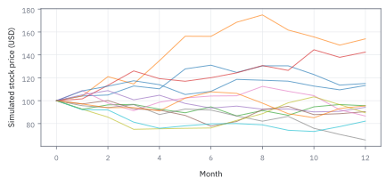
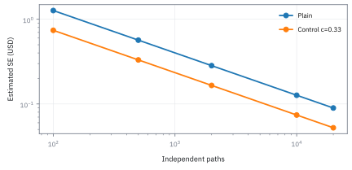
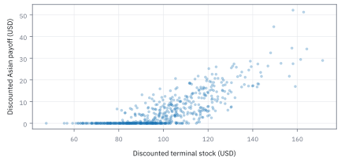
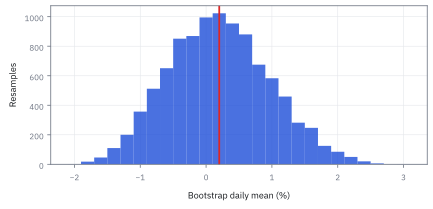
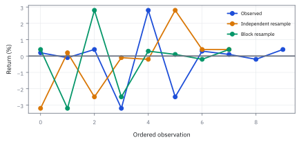

17.5 Monte Carlo and the Bootstrap
คำนวณราคาพร้อมความคลาดเคลื่อน และแยกความไม่แน่นอนของแบบจำลองจากข้อมูล
สัญญา Asian call บนหุ้น $S_0=100$ USD อัตรา $r=2\%$ ผันผวน 30% อายุหนึ่งปี สุ่ม 10,000 เส้นทางได้ราคา \$7.78 พอใช้ส่งคำสั่งหรือไม่
เฉลย: ยังไม่พอ—ความกว้างผลจ่าย $s=12.5$ USD ให้ standard error สูงถึง \$0.125 (ช่วง 95% คือ 7.53 ถึง \$8.02) กว้างเกินไปสำหรับตั้งราคา ต้องเพิ่มเส้นทางเป็น 1,000,000 หรือใช้ variance reduction
ศัพท์ที่ใช้ในหัวข้อนี้
- Monte Carlo
- การคำนวณโดยสุ่มผลลัพธ์ตามแบบจำลอง ใช้ประมาณราคาหรือความเสี่ยงเมื่อหาค่าเฉลี่ยตรง ๆ ด้วยสูตรปิดไม่ได้
- bootstrap
- การสุ่มข้อมูลเดิมกลับมาใช้ซ้ำพร้อมคืนตัวอย่าง ใช้ประเมินความไม่แน่นอนของสถิติจากข้อมูลที่มีจริง
- Asian call option
- สิทธิที่จ่ายส่วนบวกของราคาเฉลี่ยเหนือราคากำหนด ใช้ผูกผลจ่ายกับค่าเฉลี่ยตลอดทางแทนราคา ณ วันหมดอายุ
- payoff
- จำนวนเงินที่สัญญาจ่ายตามผลลัพธ์ของสินทรัพย์อ้างอิง ใช้แปลงเส้นทางราคาเป็นกระแสเงินสด
- risk-neutral
- มาตรวัดความน่าจะเป็นสำหรับตั้งราคาที่ทำให้ราคาคิดลดมีคุณสมบัติ martingale ใช้ drift $r$ แทนผลตอบแทนจริง
- Geometric Brownian Motion (GBM)
- แบบจำลองราคาบวกที่ log ของราคาเปลี่ยนด้วย drift คงที่และ shock สุ่มแบบ Gaussian ต่อเนื่อง
- standard error (SE)
- standard deviation ของ estimator ค่าเฉลี่ย ใช้บอกความแม่นยำของตัวเลขที่คำนวณได้
- antithetic variates
- การจับคู่ตัวสุ่ม $Z$ กับ $-Z$ เพื่อให้ shock หักล้างกันบางส่วน ช่วยลด variance โดยไม่ต้องเพิ่มเส้นทาง
- control variates
- การหักความคลาดเคลื่อนของตัวแปรที่รู้ค่าเฉลี่ยจริงออกจากผลลัพธ์ เพื่อลด variance ของ estimator
- covariance
-
คืออะไร: ค่าที่วัดว่าสองตัวแปรขยับไปในทิศทางเดียวกันมากน้อยเพียงใด โดยยังมีหน่วยคูณของตัวแปรทั้งสอง
ใช้ทำอะไร: ใช้คำนวณน้ำหนัก $c^*$ ที่ดีที่สุดในการหักตัวควบคุมออก
ทำไมค่ามันอ่านยาก: เพราะหน่วยขึ้นกับสเกลของตัวแปรทั้งคู่ ต้องหารด้วย standard deviation จึงจะเห็นความสัมพันธ์สัมพัทธ์
- correlation
-
คืออะไร: ค่าความสัมพันธ์เชิงเส้นที่ปรับมาตรฐานแล้ว อยู่ระหว่าง $-1$ ถึง $+1$ เสมอ
ใช้ทำอะไร: ใช้วัดประสิทธิภาพสูงสุดในการลด variance ซึ่งเท่ากับสัดส่วน $1-\rho^2$
ทำไมต้องมีทั้งสองตัว: correlation ใช้วัดความคุ้มค่า ส่วน covariance จำเป็นต่อการคำนวณสเกลน้ำหนักจริง
- block bootstrap
- การสุ่มข้อมูลที่ติดกันเป็นช่วงต่อเนื่อง ใช้รักษา autocorrelation และการเกาะกลุ่มของความผันผวนในอนุกรมเวลา
สัญลักษณ์ที่ใช้ในหัวข้อนี้
| สัญลักษณ์ | ความหมาย | หน่วย |
|---|---|---|
| $S_j$ | ราคาหุ้นที่จุดสังเกตที่ $j$ บนเส้นทางจำลอง | USD ต่อหุ้น |
| $S_0$ | ราคาหุ้น ณ จุดเริ่มต้น | USD ต่อหุ้น |
| $K$ | ราคาใช้สิทธิของสัญญา option | USD ต่อหุ้น |
| $A$ | ค่าเฉลี่ยเลขคณิตของราคาหุ้นตลอดเส้นทางสังเกต $m$ จุด | USD ต่อหุ้น |
| $r$ | อัตราดอกเบี้ยไร้ความเสี่ยงต่อปี | ต่อปี |
| $\sigma$ | ความผันผวนของผลตอบแทนหุ้นต่อปี | ต่อรากปี |
| $T$ | อายุสัญญาเป็นปี | ปี |
| $\Delta t$ | ช่วงห่างระหว่างจุดสังเกตแต่ละก้าว | ปี |
| $m$ | จำนวนจุดสังเกตตลอดอายุสัญญา | จำนวนจุด |
| $Z_j$ | ตัวสุ่มปกติมาตรฐาน $N(0,1)$ ณ ก้าวที่ $j$ | ไม่มีหน่วย |
| $N$ | จำนวนเส้นทางจำลองทั้งหมด | เส้นทาง |
| $X_i$ | payoff คิดลดของเส้นทางที่ $i$ | USD |
| $\widehat C$ | ราคาประมาณของ option จากค่าเฉลี่ยเส้นทางจำลอง | USD |
| $s_X$ | sample standard deviation ของผลจ่ายคิดลด $X_i$ | USD |
| $Y_i$ | ตัวแปรควบคุมของเส้นทางที่ $i$ ที่ทราบค่าเฉลี่ยจริง | USD |
| $\nu$ | ค่าเฉลี่ยทางทฤษฎีที่แท้จริงของตัวแปรควบคุม $\mathbb E[Y]$ | USD |
| $c$ | coefficient ของตัวควบคุมที่เลือกเพื่อลด variance | ไม่มีหน่วย |
| $\rho$ | correlation ระหว่าง payoff คิดลดและตัวแปรควบคุม | ไม่มีหน่วย |
| $R_j$ | ผลตอบแทนของข้อมูลจริงจุดที่ $j$ | สัดส่วน |
| $n$ | จำนวนข้อมูลจริงในตัวอย่าง | จำนวนวัน |
| $\bar R^*$ | ค่าเฉลี่ยผลตอบแทนที่ได้จากการสุ่มซ้ำแบบ bootstrap หนึ่งรอบ | สัดส่วน |
ที่มาที่ไป: ชื่อที่มาจากบ่อนคาสิโน
วิธี Monte Carlo ถูกริเริ่มขึ้น ณ ห้องปฏิบัติการ Los Alamos ในช่วงทศวรรษ 1940 โดย Stanisław Ulam และ John von Neumann ระหว่างภารกิจคำนวณการแพร่กระจายของนิวตรอน
Ulam เล่าว่าแนวคิดนี้ผุดขึ้นมาขณะพักฟื้นจากการผ่าตัดและเล่นไพ่ Solitaire เขาต้องการคำนวณโอกาสชนะแต่สูตรคณิตศาสตร์บริสุทธิ์ซับซ้อนเกินไป จึงเปลี่ยนมาบันทึกผลการเล่นซ้ำหลายร้อยตาแล้วหาค่าเฉลี่ย
ชื่อเรียก Monte Carlo ตั้งขึ้นตามเมืองคาสิโนชื่อดังในโมนาโก ซึ่งลุงของ Ulam ยืมเงินไปเล่นพนันบ่อยครั้ง
ส่วนอีกเสาหลักคือ bootstrap ที่คิดค้นโดย Bradley Efron ในปี 1979 ซึ่งปฏิวัติวงการสถิติด้วยการสุ่มซ้ำจากข้อมูลจริงที่มีอยู่ แทนที่จะสมมติ parametric distribution ล่วงหน้า
ของที่โจทย์ให้ — Worked Example 17.5 — ตั้งราคา Asian call จากการจำลอง
โจทย์กำหนดราคาเริ่มต้น \$100, strike \$100, อัตราดอกเบี้ยไร้ความเสี่ยง 2% ต่อปี, volatility 30% ต่อปี, อายุสัญญาหนึ่งปี โดยคิดผลจ่ายจากค่าเฉลี่ยเลขคณิตของราคาสิ้นเดือน 12 จุด
เนื่องจากผลบวกของราคาแบบ lognormal ไม่แจกแจงแบบ lognormal จึงไม่มีสูตรปิดแบบ Black-Scholes ต้องใช้การจำลอง Monte Carlo ภายใต้ risk-neutral measure ซึ่ง drift เท่ากับอัตราดอกเบี้ยไร้ความเสี่ยง ไม่ใช่ผลตอบแทนคาดหวังจริง เพราะต้นทุนการทำ delta hedging หักล้างความเสี่ยงทิศทางออกไปหมด
ขั้นที่ 1 — คำนวณค่าคงที่ของก้าวเดินรายเดือน
การเดินราคาแบบ Geometric Brownian Motion แยกเป็นส่วน drift ที่แน่นอน และส่วน shock สุ่ม แต่ละก้าวมีขนาด $\Delta t = 1/12$ ปี
ก้อน drift ติดลบแม้ว่าอัตราดอกเบี้ยจะเป็นบวก เพราะผลของ Jensen's inequality ที่หัก $-\frac{1}{2}\sigma^2 = -0.045$ ซึ่งใหญ่กว่า $r = 0.02$ ค่า median ของราคาหุ้นจึงลดลงตามเวลา
ก้อน shock มีขนาด $0.0866025$ ต่อหนึ่ง standard deviation ของ $Z_k$ ซึ่งใหญ่กว่า drift ถึง 41 เท่า ในระดับรายเดือนความผันผวนจึงครองทิศทางเกือบทั้งหมด
ขั้นที่ 2 — เดินเส้นทางที่หนึ่งด้วยมือ 12 ก้าว
สุ่มชุดตัวเลขมาตรฐาน 12 ค่าเพื่อจำลองราคารายเดือนตามลำดับเวลา
ราคาเฉลี่ยตลอดทั้งปี $A_A = 101.5146$ USD สูงกว่า strike \$100 จึงเกิดสิทธิรับเงิน \$1.5146 เมื่อสิ้นปี
คิดลดกลับมาเป็นมูลค่า ณ วันนี้ด้วย discount factor $e^{-0.02} = 0.980199$ ได้มูลค่าคิดลด $1.4846$ USD สำหรับเส้นทางนี้
ขั้นที่ 3 — เดินคู่แฝด antithetic ด้วยเครื่องหมายตรงข้าม
สร้างเส้นทางคู่แฝดโดยกลับเครื่องหมายเป็น $-Z_k$ ซึ่งมีผลรวม $\sum(-Z) = -0.70$ โดยไม่ต้องสุ่มเลขใหม่
เส้นทางคู่แฝดได้ราคาเฉลี่ย $96.2027$ USD ต่ำกว่า \$100 ทำให้ payoff เป็นศูนย์ ค่าเฉลี่ยของทั้งคู่จึงเท่ากับ $0.7423$ USD
บรรทัดสุดท้ายตรวจสอบจุดสิ้นสุด $S_{12}$ ด้วยสูตรผลรวมรวดเดียว ได้ $103.626$ USD ตรงกับผลการคำนวณทีละขั้นทุกประการ
Figure 17.5a — การเฉลี่ยขึ้นกับทั้งเส้นทาง

ภาพแสดง 12 เส้นทางจำลองที่สังเกตปลายเดือน สัญญา Asian option รับข้อมูลทั้ง 12 จุดในแต่ละเส้น จึงไม่สามารถใช้ราคาสุดท้ายแทนค่าเฉลี่ยได้
ขั้นที่ 4 — นิยามของ estimator ราคา และ standard error ที่ต้องรายงานคู่กัน
เมื่อจำลอง $N$ เส้นทาง ราคาที่ประมาณได้คือ sample mean ของ payoff คิดลด และต้องรายงานคู่กับ standard error เพื่อบอกความกว้างของความไม่แน่นอนเสมอ
ค่า $s_X \approx 12.5$ USD คือ sample standard deviation ของ payoff คิดลด ซึ่งมีขนาดใหญ่กว่าตัวราคา $7.78$ USD เสียอีก
ที่ $N = 10{,}000$ ช่วง confidence interval 95% คือ $7.53$ ถึง $8.02$ USD กว้างเกินกว่าจะนำไปตั้งราคาซื้อขายบนโต๊ะเทรด
เมื่อเพิ่มเส้นทางเป็น $1{,}000{,}000$ ช่วง confidence interval แคบลงเหลือ $7.755$ ถึง $7.805$ USD ซึ่งละเอียดถึงระดับสตางค์
ขั้นที่ 5 — อัตราแลกเปลี่ยนของความแม่นยำ: กฎกำลังสอง
การลด standard error ลงครึ่งหนึ่ง ต้องเพิ่มจำนวนเส้นทางถึง 4 เท่า ไม่ใช่ 2 เท่า
สามแถวล่างคือราคาของความแม่นยำเมื่อเริ่มจาก 100,000 เส้นทาง อยากแม่นขึ้นสองเท่าต้องสุ่มสี่เท่า การเพิ่มความแม่นยำเป็น 10 เท่า ต้องจ่ายต้นทุนคอมพิวเตอร์เพิ่มขึ้นถึง 100 เท่า การซื้อฮาร์ดแวร์ที่เร็วขึ้น 10 เท่าจึงให้ความแม่นยำเพิ่มขึ้นเพียง $\sqrt{10} \approx 3.16$ เท่า
นี่คือเหตุผลสำคัญที่สาย quant ต้องพึ่งพาเทคนิคทางคณิตศาสตร์ในการลด variance แทนการทุ่มทรัพยากรประมวลผลเพียงอย่างเดียว
ทำไม Asian call ถูกกว่า European call: การเฉลี่ยลดความผันผวนที่มีผล
ตั้งราคา European call ด้วย Black-Scholes โดยใช้ตัวเลขชุดเดียวกัน แล้วหาว่าค่าเฉลี่ย 12 จุดมีความผันผวนเท่าไร
0.065 คือ ln(100/100) ซึ่งเป็นศูนย์ บวก 0.02 บวกครึ่งหนึ่งของ 0.09 Asian call ถูกกว่า European \$5.05 หรือ 39.4% ราคา 12 จุดบนเส้นทางเดียวกันไม่อิสระกัน แต่การเฉลี่ยยังเกลี่ยความผันผวนให้เรียบขึ้น ค่าเฉลี่ยจึงแกว่งเหมือนหุ้นที่ผันผวน 18.4% ไม่ใช่ 30% และ call ที่ผันผวนน้อยย่อมถูกกว่า
ถ้าเฉลี่ยต่อเนื่องทุกขณะ เศษส่วนเข้าใกล้หนึ่งในสาม ความผันผวนที่มีผลลดถึง 17.3% ผลข้างเคียงบนโต๊ะเทรดคือ Asian ทนการปั่นราคาวันหมดอายุ เพราะต้องปั่นถึง 12 วัน
ขั้นที่ 6 — กลไกลด variance ด้วยคู่ antithetic
การใช้คู่ตัวสุ่ม $Z$ และ $-Z$ ช่วยลด variance ของ estimator โดยอาศัยความสัมพันธ์เชิงลบระหว่างทั้งสองเส้นทาง
เนื่องจาก $g(Z)$ และ $g(-Z)$ มีการกระจายตัวเดียวกันแต่เคลื่อนไหวในทิศทางตรงกันข้าม correlation $\rho_{-}$ จึงติดลบ
จากการจำลองของเอกสาร $\rho_{-}$ ของ Asian call นี้คือ −0.389 variance ลดลง 1.64 เท่าที่จำนวนเส้นทางเท่ากัน SE ที่ 100,000 เส้นทางลดจาก 0.0395 เหลือ 0.0309 ช่วยได้ไม่มาก เพราะ payoff ตัดด้านลบทิ้ง เส้นทาง A ได้ 1.51 แต่คู่แฝดได้ 0 ไม่ใช่ −1.51
เมื่อ $\rho_{-} \lt 0$ ค่า variance รวมจะน้อยกว่า $\frac{1}{2}\sigma_X^2$ ซึ่งเป็นระดับของการสุ่มแบบอิสระสองเส้นทาง ทำให้ได้ความแม่นยำสูงกว่าด้วยต้นทุนการสุ่มที่เท่าเดิม
ขั้นที่ 7 — เลือก coefficient ของ control variate และสัดส่วนที่ประหยัดได้
ใช้ตัวแปรควบคุม $Y = e^{-rT}S_T$ ซึ่งเป็นราคาหุ้นคิดลด ณ ปลายปี เรารู้ค่าเฉลี่ยทางทฤษฎีแน่นอนคือ $\mathbb E[Y] = S_0 = 100$ USD
การเลือก $c^* = \operatorname{Cov}(X,Y)/\operatorname{Var}(Y)$ เป็นรูปเดียวกับความชัน regression ในหัวข้อ 15.1 และ hedge ratio ในหัวข้อ 7.4 ซึ่งเป็นการหักส่วน variance ที่อธิบายได้ออกไป
ด้วย correlation $0.8103$ ทำให้ variance ของ estimator ลดลงเหลือเพียง $34.34\%$ ของเดิม standard error ลดลงกว่า $41\%$ ประหยัดการคำนวณเทียบเท่าการจำลองเพิ่มเกือบ 3 เท่า
Figure 17.5b — ลด variance ก่อนเพิ่มเครื่อง

เส้นทั้งสองแสดง standard error ที่คำนวณจาก sample standard deviation หารด้วยรากของจำนวนเส้นทาง ตัวแปรควบคุม $c = 0.33$ ให้ความคลาดเคลื่อนต่ำกว่าวิธีตรงในทุกระดับของจำนวนเส้นทาง
Figure 17.5c — ตัวควบคุมต้องเคลื่อนไหวร่วมจริง

แผนภาพการกระจายระหว่างราคาหุ้นปลายปีที่คิดลดกับผลจ่ายของ Asian option แสดงความสัมพันธ์เชิงบวกที่เหนียวแน่น ทำให้ตัวแปรควบคุมสามารถดึงสัญญาณรบกวนออกไปได้มาก
ตัวควบคุมที่ใกล้กว่า: Asian แบบเฉลี่ยเรขาคณิต
เอกสารของคอร์สใช้ตัวควบคุมอีกตัว คือ Asian call ที่เฉลี่ยแบบเรขาคณิต ผลคูณของ lognormal ยังเป็น lognormal จึงมีสูตรปิด และมันขยับเกือบเหมือนค่าเฉลี่ยเลขคณิตของ 12 จุดเดียวกัน
เรารู้ค่าจริงของ $Y$ แน่นอน จึงรู้ว่าการสุ่มชุดนี้พลาดไปเท่าไร แล้วหักความพลาดนั้นออกจากคำตอบของ Asian แบบเลขคณิต สูตรของอัตราการลด variance คือ $1/(1-\rho^2)$ แบบเดียวกับขั้นที่ 7
ตัวควบคุมในขั้นที่ 7 คือราคาหุ้นปลายปี มี correlation 0.81 ลดได้ 2.91 เท่า ตัวนี้มี 0.99917 ลดได้ 603 เท่า จะได้ SE 0.0016 ด้วยวิธีตรงต้องสุ่ม 60 ล้านเส้นทาง เทคนิคที่ถูกมีค่ามากกว่าคอมพิวเตอร์ที่แรงกว่า 600 เท่า
ขั้นที่ 8 — ความคลาดเคลื่อน bootstrap จากตัวอย่างผลตอบแทนจริง
เมื่อไม่มีแบบจำลองทางทฤษฎี ใช้ bootstrap สุ่มซ้ำพร้อมคืนตัวอย่างจากข้อมูลจริง 5 วัน $[-2\%, -1\%, 0\%, 1\%, 3\%]$ เพื่อวัดความไม่แน่นอนของค่าเฉลี่ย
ห้าวันรวมกันได้ 0.01 เฉลี่ย 0.2% $D$ คือผลบวกกำลังสองของระยะห่างจากค่าเฉลี่ย เศษส่วนด้านในคือ variance ของข้อมูลตัวอย่างที่หารด้วย $n=5$ ตามคุณสมบัติของ empirical distribution ของ bootstrap
เมื่อหารด้วย $n=5$ อีกครั้งเพื่อหา variance ของค่าเฉลี่ย ได้ standard error $0.77\%$ ซึ่งใหญ่กว่าตัวค่าเฉลี่ย $0.2\%$ เกือบ 4 เท่า ข้อมูล 5 วันจึงไม่เพียงพอจะสรุปว่ากลยุทธ์มีผลตอบแทนเป็นบวก
ทำไม Monte Carlo ถึงชนะในมิติสูง: คำสาปของมิติ
ในมิติต่ำการวางตารางกริดลู่เข้าเร็วกว่า แต่เมื่อจำนวนมิติเพิ่มขึ้น อัตราของกริดจะพังทลายลงในขณะที่ Monte Carlo ไม่ขึ้นกับจำนวนมิติเลย
การวางกริดแบบดั้งเดิมมีจำนวนมิติ $d$ อยู่ที่ตัวหารของเลขชี้กำลัง ที่ 10 มิติและต้องการความแม่นยำ $10^{-2}$ กริดต้องการจุดคำนวณถึง $10^{10}$ จุด
ในทางตรงกันข้าม Monte Carlo ต้องการเพียง $10^4$ เส้นทาง ต่างกันถึง 6 ลำดับขนาด ทำให้พอร์ตหรือสัญญา derivative ที่มีสินทรัพย์หลายตัวต้องใช้การสุ่มสถานการณ์เท่านั้น
Figure 17.5d — ความไม่แน่นอนจากการใช้ข้อมูลเดิมซ้ำ

ค่าเฉลี่ยจาก bootstrap 10,000 ชุดกระจายรอบ $0.2\%$ ด้วยความคลาดเคลื่อนเชิงทฤษฎีของการสุ่มประมาณ $0.7694$ จุดเปอร์เซ็นต์ ซึ่งสะท้อนความไม่แน่นอนบนตัวอย่าง 5 วัน
Figure 17.5e — block รักษาวันที่ติดกันไว้

เส้นสีน้ำเงินเป็นผลตอบแทนที่มีวันที่แกว่งแรงติดกัน เส้นสีส้มสุ่มแบบอิสระทำให้ช่วงนั้นสลายไป ส่วนเส้นสีเขียวสุ่มเป็น block ต่อเนื่อง ทำให้โครงสร้างความสัมพันธ์ตามเวลาในอดีตยังถูกรักษาไว้
รักษาความต่อเนื่องด้วย block bootstrap
การสุ่มข้อมูลรายวันแบบอิสระทำลาย autocorrelation และ volatility clustering ในข้อมูลการเงินอย่างสิ้นเชิง
วิธี block bootstrap แก้ไขปัญหานี้โดยการสุ่มข้อมูลเป็นท่อนที่มีความยาวต่อเนื่องกันหลายวัน เพื่อรักษาความสัมพันธ์ระยะสั้นภายใน block ไว้
อย่างไรก็ดี การสุ่มซ้ำจากข้อมูลย้อนหลังไม่สามารถสร้างวิกฤตการณ์รูปแบบใหม่ที่ไม่เคยเกิดขึ้นมาก่อนในประวัติศาสตร์ได้
คำตอบ — ราคา Asian call และความแม่นของมัน
คำถาม: Asian call บนหุ้น \$100 strike 100 ดอกเบี้ย 2% ผันผวน 30% อายุหนึ่งปี เฉลี่ย 12 จุดสิ้นเดือน สุ่ม 10,000 เส้นทางได้ \$7.78 พอใช้ตั้งราคาไหม และทำให้แม่นขึ้นอย่างไรจึงคุ้ม?
ของที่มี: ขั้นที่ 1 ถึง 7 และสองส่วนที่ต่อจากขั้นที่ 7
1 เส้นทาง A ได้ค่าเฉลี่ย 101.5146 payoff คิดลด 1.4846 คู่แฝดได้ 96.2025 payoff ศูนย์ ค่าเฉลี่ยของคู่ 0.7423
2 ราคา \$7.78 ความกว้างของ payoff 12.5 SE เป็น 0.125, 0.0395 และ 0.0125 ที่ 10,000, 100,000 และ 1,000,000 เส้นทาง ช่วง 95% คือ ±0.245, ±0.077 และ ±0.025
3 ลด SE ครึ่งหนึ่งต้องสุ่มสี่เท่า antithetic ลด variance 1.64 เท่า Asian แบบเรขาคณิตเป็นตัวควบคุมลดได้ 603 เท่า
4. European call ราคา 12.82 Asian ถูกกว่า 39.4% เพราะความผันผวนที่มีผลเหลือ 18.4%
ตรวจเองใน 10 วินาที: 12.5 หาร 100 ได้ 0.125 และ 1.96 คูณ 0.125 ได้ 0.245
แปลว่าอะไร: ที่ 10,000 เส้นทางรู้ราคาแค่ระหว่าง 7.53 ถึง 8.02 ยังไม่พอตั้งราคาจริง แต่ไม่ต้องซื้อเครื่องเพิ่ม ใช้ตัวควบคุมที่ขยับตามกันแทบเป๊ะ ความแม่นของการสุ่มก็ยังไม่ใช่ความถูกของแบบจำลอง
ความแม่นยำของการสุ่ม ไม่ใช่ความถูกต้องของแบบจำลอง
การจำลอง 100 ล้านเส้นทางช่วยให้ standard error เข้าใกล้ศูนย์ แต่ไม่ได้ช่วยลด model risk เลย หากสมมติฐาน GBM หรือค่าความผันผวนใน model ไม่ตรงกับความจริง คำตอบที่ได้จะเป็นตัวเลขที่ผิดอย่างแม่นยำสูง
ข้อจำกัด: สมมติฐานเทียบกับโลกความเป็นจริง
| ประเด็น | ข้อสมมติของวิธีนี้ | ความเป็นจริงในตลาด | แนวทางปฏิบัติ |
|---|---|---|---|
| ความเร็ว | เพิ่มเส้นทางได้ไม่จำกัด | ความแม่นยำเพิ่มตามรากที่สอง ต้นทุนคอมพิวเตอร์พุ่งสูง | ใช้เทคนิค antithetic และ control variate ร่วมด้วยเสมอ |
| แบบจำลอง | แบบจำลองสะท้อนความจริงสมบูรณ์ | การสุ่มไม่ช่วยแก้ปัญหาแบบจำลองผิด | ทดสอบความไวต่อ parameter และทำ stress testing ควบคู่ |
| ข้อมูลอดีต | ข้อมูลย้อนหลังครอบคลุมอนาคต | วิกฤตการณ์ใหม่อาจไม่อยู่ในข้อมูลย้อนหลัง | อย่าพึ่งพา bootstrap เพียงอย่างเดียวในสภาวะผิดปกติ |
การสุ่มช่วยลด sampling error เท่านั้น แต่ไม่สามารถกำจัด model risk ได้
คำนวณซ้ำได้
import numpy as np
r, sigma, dt = 0.02, 0.30, 1/12
drift = (r - 0.5 * sigma**2) * dt
shock = sigma * np.sqrt(dt)
assert abs(drift - (-0.0020833333333333335)) < 1e-6
assert abs(shock - 0.08660254037844386) < 1e-6
z = np.array([+0.42, -1.31, +0.77, -0.55, +1.08, +0.16, -0.92, +1.44, -0.28, +0.61, -1.05, +0.33])
s12_a = 100 * np.exp(12 * drift + shock * z.sum())
assert abs(s12_a - 103.626) < 0.01
ret = np.array([-0.02, -0.01, 0.0, 0.01, 0.03])
var_star = ret.var() / 5
assert abs(var_star - 0.0000592) < 1e-7
assert abs(np.sqrt(var_star) - 0.007694) < 1e-5
assert abs(12.5 / np.sqrt(400_000) - 0.0198) < 1e-4 # 4x paths halves SE
assert abs(1 / (1 - 0.389) - 1.64) < 0.01 and abs(0.0395 * np.sqrt(0.611) - 0.0309) < 1e-4
assert abs(1 / (1 - 0.99917**2) - 603) < 1 and abs(0.0395 / np.sqrt(603) - 0.0016) < 1e-4
from scipy.stats import norm
t = np.arange(1, 13) / 12 # geometric Asian, exact
mg = np.log(100) + (0.02 - 0.045) * t.mean()
vg = 0.09 * np.minimum.outer(t, t).sum() / 144
dg = (mg - np.log(100) + vg) / np.sqrt(vg)
geo = np.exp(-0.02) * (np.exp(mg + vg / 2) * norm.cdf(dg) - 100 * norm.cdf(dg - np.sqrt(vg)))
assert abs(geo - 7.3645) < 1e-4
d1 = 0.065 / 0.30
euro = 100 * norm.cdf(d1) - 100 * np.exp(-0.02) * norm.cdf(d1 - 0.30)
assert abs(euro - 12.822) < 1e-3 and abs((euro - 7.776) / euro - 0.394) < 1e-3
assert abs(0.30 * np.sqrt(13 * 25 / (6 * 144)) - 0.184) < 1e-3 and abs(0.30 / np.sqrt(3) - 0.1732) < 1e-4โค้ดนี้ใช้ตรวจสอบค่าคงที่ก้าวเดิน ผลรวมจุดปลาย และความคลาดเคลื่อน bootstrap ด้วย NumPy
สรุปที่ใช้ได้จริง
- สร้างผลจ่ายคิดลดแล้วรายงานราคาและ SE จากหน่วยสุ่มที่เป็นอิสระ
- ตัวควบคุมลดความคลาดเคลื่อนได้เมื่อรู้ค่าเฉลี่ยและมีความสัมพันธ์ที่เหมาะสม
- bootstrap ประเมินความไม่แน่นอนของข้อมูลที่มี; ข้อมูลตามเวลาต้องรักษาความต่อเนื่อง